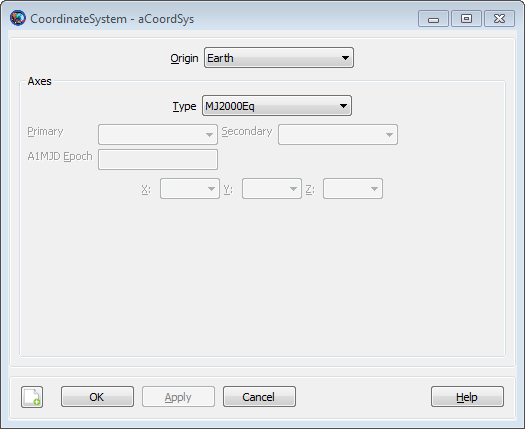
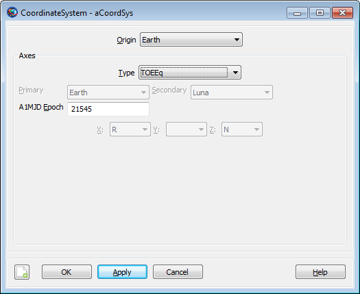
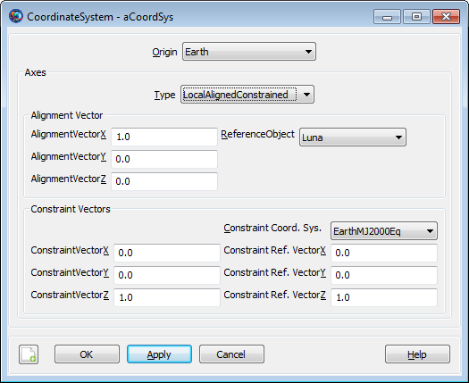
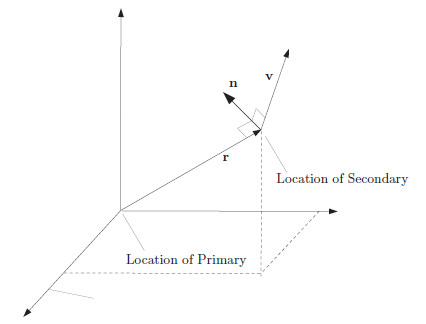

CoordinateSystem
CoordinateSystem — An axis and origin pair
Description
A CoordinateSystem in GMAT is defined as an origin and an axis system. You can select the origin of a CoordinateSystem from various points such as a CelestialBody, Spacecraft, GroundStation, or LibrationPoint to name a few. GMAT supports numerous axis systems such as J2000 equator, J2000 ecliptic, ICRF, ITRF, Topocentric, and ObjectReferenced among others. CoordinateSystems are tightly integrated into GMAT to enable you to define, report, and visualize data in coordinate systems relevant to your application. This resource cannot be modified in the Mission Sequence.
See Also: Spacecraft, Calculation Parameters, OrbitView
Fields
| Field | Description | ||||||||||||
|---|---|---|---|---|---|---|---|---|---|---|---|---|---|
| AlignmentVectorX | The x component of the expressed in the local frame (for example, expressed in the frame). Used for the following axis systems: .
| ||||||||||||
| AlignmentVectorY | The y component of the expressed in the local frame (for example, expressed in the frame). Used for the following axis systems: .
| ||||||||||||
| AlignmentVectorZ | The z component of the expressed in the local frame (for example, expressed in the frame). Used for the following axis systems: .
| ||||||||||||
| Axes | The axes of the CoordinateSystem.
| ||||||||||||
| ConstraintVectorX | The x component of the expressed in the local frame (for example, expressed in the frame). Used for the following axis systems: .
| ||||||||||||
| ConstraintVectorY | The y component of the expressed in the local frame (for example, expressed in the frame). Used for the following axis systems: .
| ||||||||||||
| ConstraintVectorZ | The z component of the expressed in the local frame (for example, expressed in the frame). Used for the following axis systems: .
| ||||||||||||
| ConstraintReferenceVectorX | The x component of the expressed in the. Used for the following axis systems: .
| ||||||||||||
| ConstraintReferenceVectorY | The y component of the expressed in the . Used for the following axis systems: .
| ||||||||||||
| ConstraintReferenceVectorZ | The z component of the expressed in the . Used for the following axis systems: .
| ||||||||||||
| Constraint Coordinate System | The coordinate system for the . Used for the following axis sytems: .
| ||||||||||||
| Epoch | The reference epoch for the CoordinateSystem. This field is only used for TOE amd MOE axis types.
| ||||||||||||
| Origin | The origin of the CoordinateSystem.
| ||||||||||||
| Primary | The primary body for an ObjectReferenced axis system. This field is only used if Axes = ObjectReferenced. See the discussion below for more information on how Primary and Secondary are used to compute ObjectReferenced axes.
| ||||||||||||
| ReferenceObject | The reference object for a axis system. The axes are computed such that the in the body frame is aligned with the vector pointing from the to the .
| ||||||||||||
| Secondary | The secondary body for an ObjectReferenced axis system. This field is only used if Axes = ObjectReferenced. See the discussion below for more information on how Primary and Secondary are used to compute ObjectReferenced axes.
| ||||||||||||
| XAxis | The x-axis definition for an ObjectReferenced axis system. This field is only used if Axes = ObjectReferenced. See the discussion below for more information on how the axes are computed for ObjectReferenced axis systems.
| ||||||||||||
| YAxis | The y-axis definition for an ObjectReferenced axis system. This field is only used if Axes = ObjectReferenced. See the discussion below for more information on how the axes are computed for ObjectReferenced axis systems.
| ||||||||||||
| Zaxis | The z-axis for an ObjectReferenced axis system. This field is only used if Axes = ObjectReferenced. See the discussion below for more information on how the axes are computed for ObjectReferenced axis systems.
|
GUI
 |
The New Coordinate System dialog box shown above appears when you add a new coordinate system in the Resource Tree. You provide a name for the new CoordinateSystem in the Coordinate System Name box and configure the CoordinateSystem by selecting the Origin and Axes types along with other settings. Some settings, such as Primary and Secondary, are only active for particular Axes types and those dependencies are described below.
|  |
When editing an existing CoordinateSystem, you use the CoordinateSystem dialog box. The default configuration is shown above.
 |
If you select ObjectReferenced for the Axes type, then the Primary, Secondary, X, Y, and Z fields are activated. You can use the ObjectReferenced axis system to define coordinates based on the motion of two space objects such as Spacecraft, CelestialBodies, or Barycenters to name a few. See the discussion below for a detailed definition of the ObjectReferenced axis system.
|  |
If you select TOEEq, TOEEc, MOEEq, or MOEEc as the axis type, then the A1MJd Epoch field is activated. Use the A1MJd Epoch field to define the reference epoch of the coordinate system.
|  |
If you select LocalAlignedConstrained as the axes Type, then CoordinateSystem dialog displays the fields illustrated above for configuring the axes.
Remarks
Computation of J2000-Based Axes using IAU76/FK5 Reduction
FK5 reduction is the transformation that rotates a vector expressed in the MJ2000Eq system to the EarthFixed CoordinateSystem. There are many coordinate systems that are intermediate rotations in FK5 reduction and this section describes how the following axes types are computed: MJ2000Eq, MJ2000Ec, EarthFixed, MODEq, MODEc,TODEq,TODEc, MODEq, MODEc, TODEq, and TODEc axes systems.
The time varying orientation of the Earth is complex due to interactions between the Earth and its external environment (the Sun and Moon and Planets) and internal dynamics. The orientation cannot currently be modelled to the accuracy required by many space applications and FK5 reduction is a combination of dynamical modelling along with daily corrections from empirical observations. The figure below illustrates components of motion of the Earth with respect to inertial space. The primary components of the motion of the Earth with respect to inertial space are Precession, Nutation, Sidereal time and, Polar Motion.
 |
The principal moment of inertia is defined as the Celestial Ephemeris Pole. Due to the fact that Earth’s mass distribution changes with time, the Celestial Ephemeris Pole is not constant with respect to the Earth’s surface. Precession is defined as the coning motion that the Celestial Ephemeris Pole makes around the ecliptic north pole. The other principal component of the motion of the Celestial Ephemeris Pole is called nutation and is the oscillation in the angle between the Celestial Ephemeris Pole and the north ecliptic pole. The theory of Precession and Nutation come from dynamical models of the Earth’s motion. The Sidereal time is the rotation of the Earth about the Celestial Ephemeris Pole. The sidereal time model is a combination of theory and observation. The Earth’s spin axis direction is not constant with respect to the Earth’s crust and its motion is called Polar Motion. A portion of polar motion is due to complicated dynamics, and a portion is due to unmodelled errors in nutation. Polar motion is determined from observation.
The True of Date (TOD) systems and Mean of Date (MOD) systems are intermediate coordinate systems in FK5 reduction and are commonly used in analysis. The details of the computations are contained in the GMAT mathematical specification and the figure below is included here for summary purposes. The following abbreviations are used in the figure. PM: Polar Motion, ST: Sideral Time, NUT: Nutation, PREC: Precession, ITRF: International Terrestrial Reference Frame (Earth Fixed), PEF: Pseudo Earth Fixed, TODEq: True of Date Equator, TODEc: True of Date Ecliptic, MODEc: Mean of Date Ecliptic, MODEq: Mean of Date Equator, FK5: J2000 Equatorial Inertial (IAU-1976/1980).
 |
Computation of ICRF and ITRF Axes using IAU2000 Conventions
The computation for the International Celestial Reference Frame (ICRF) and the International Terestrial Reference Fame (ITRF) are computed using the IAU 2000A theory with the 2006 update to precession. GMAT uses the Celestial Intermediate Origin (CIO) method of transformation which avoids issues associated with precession and nutation. In the CIO model, the Celestial Intermediate Pole unit vector is modeled using the variables X and S and the CIO locator, s. For performance reasons, GMAT interpolates X, Y, and s, from precomputed values stored in the file named ICRF_Table.txt distributed with GMAT.
GMAT models the rotation from ICRF to MJ200Eq by rotating through the EarthFixed frame which is identical for both the old (1976) and new (2000) theories. For performance reasons, the conversion from ICRF to MJ2000Eq is interplolated from pre-computed values of the Euler axis and angle between those frames. Note that GMAT does not currenty support the IAU2000 body fixed frame for Earth and that model will be included in a future release.
Computation of ObjectReference Axis System
An ObjectReferenced axis system is defined by the motion of one object with respect to another object. The figure below defines the six principal directions of an Object Referenced axis system. One is the relative position of the secondary object with respect to the primary object, denoted by r, expressed in the inertial frame. The second is the relative velocity, denoted here by v, of the secondary object with respect to the primary, expressed in the inertial frame. The third direction is the vector normal to the direction of motion which is denoted by n and is calculated using n = r × v. The remaining three directions are the negative of the first three yielding the complete set: {R,-R, V,-V, N,-N}.
|  |
You define an Object Referenced axis system by defining two axes from the three available [X, Y, and Z] using the six available options {R,-R, V,-V, N,-N}. Given two directions, GMAT constructs an orthogonal, right-handed CoordinateSystem. For example, if you choose the x-axis to be in the direction of R and the z-axis to be in the direction of N, GMAT completes the right-handed set by setting the y-axis in the direction of NxR. If you choose permutations that result in a non-orthogonal or left-handed CoordinateSystem, GMAT will throw an error message.
Warning
GMAT currently assumes that terms involving the cross and dot product of acceleration are zero when computing ObjectReferenced rotation matrices.
Overview of Built-in Coordinate Systems
| Name | Origin | Axes | Description |
|---|---|---|---|
| EarthMJ2000Eq | Earth | MJ2000Eq | An Earth equator inertial system based on IAU-1976/FK5 theory with 1980 update to nutation. |
| EarthMJ2000Ec | Earth | MJ2000Ec | An Earth ecliptic inertial system based on IAU-1976/FK5 theory with 1980 update to nutation. |
| EarthFixed | Earth | BodyFixed | An Earth fixed system based on IAU-1976/FK5 theory with 1980 update to nutation. |
| EarthICRF | Earth | ICRF | An Earth equator inertial system based on IAU-2000 theory with 2006 update to precession. |
Description of Axes Types
| Axes Name | Origin Limitations | Base Type | Description |
|---|---|---|---|
| MJ2000Eq | None | IAU-1976 FK5 | An inertial coordinate system. The nominal x-axis points along the line formed by the intersection of the Earth’s mean equatorial plane and the mean ecliptic plane (at the J2000 epoch), in the direction of Aries. The z-axis is normal to the Earth’s mean equator at the J2000 epoch and the y-axis completes the right-handed system. The mean planes of the ecliptic and equator, at the J2000 epoch, are computed using IAU-1976/FK5 theory with 1980 update for nutation. |
| MJ2000Ec | None | IAU-1976 FK5 | An inertial coordinate system. The x-axis points along the line formed by the intersection of the Earth’s mean equator and the mean ecliptic plane at the J2000 epoch. The z-axis is normal to the mean ecliptic plane at the J2000 Epoch and the y-axis completes the right-handed set. This system is computed using IAU-1976/FK5 theory with 1980 update for nutation. |
| ICRF | None | IAU-2000 | An inertial coordinate system. The axes are close to the mean Earth equator and pole at the J2000 epoch, and at the Earth’s surface, the RSS difference between vectors expressed in MJ2000Eq and ICRF is less than 1 m. Note that since MJ2000Eq and ICRF are imperfect realizations of inertial systems, the transformation between them is time varying. This axis system is computed using IAU-2000A theory with 2006 update for precession. |
| LocalAlignedConstrained | None | IAU-1976 FK5 | The LocalAlignedConstrained axis system is an aligned constrained system based on the position of the ReferenceObject with respect to the Origin and is computed using the well known Triad algorithm. The axes are computed such that the AlignmentVector, defined as the components of the alignment vector expressed in the LocalAlignedConstrained system, is aligned with the position of the ReferenceBody w/r/t the origin. The rotation about the AlignmentVector is resolved by minimizing the angle between the ContraintVector, defined as the constraint vector expressed in the LocalAlignedConstrained system, and the ConstraintReferenceVector, defined as the constraint reference vector expressed in the ConstraintCoordinateSystem. The alignment vectors and the constraint vectors cannot have zero length. Similarly, the cross products of the constraint vector and alignment vector cannot have zero length. |
| MODEq | None | IAU-1976 FK5 | A quasi-inertial coordinate system referenced to Earth’s mean equator at the current epoch. The current epoch is defined by the context of use and usually comes from the spacecraft or graphics epoch. This system is computed using IAU-1976/FK5 theory with 1980 update for nutation. |
| MODEc | None | IAU-1976 FK5 | A quasi-inertial coordinate system referenced to the mean ecliptic at the current epoch. The current epoch is defined by the context of use and usually comes from the spacecraft or graphics epoch. This system is computed using IAU-1976/FK5 theory with 1980 update for nutation. |
| TODEq | None | IAU-1976 FK5 | A quasi-inertial coordinate system referenced to Earth’s true equator at the current epoch. The current epoch is defined by the context of use and usually comes from the spacecraft or graphics epoch. This system is computed using IAU-1976/FK5 theory with 1980 update for nutation. |
| TODEc | None | IAU-1976 FK5 | A quasi-inertial coordinate system referenced to Earth’s true ecliptic at the current epoch. The current epoch is defined by the context of use and usually comes from the spacecraft or graphics epoch. This system is computed using IAU-1976/FK5 theory with 1980 update for nutation. |
| MOEEq | None | IAU-1976 FK5 | A quasi-inertial coordinate system referenced to Earth’s mean equator at the reference epoch. The reference epoch is defined on the CoordinateSystem object. This system is computed using IAU-1976/FK5 theory with 1980 update for nutation. |
| MOEEc | None | IAU-1976 FK5 | A quasi-inertial coordinate system referenced to the mean ecliptic at the reference epoch. The reference epoch is defined on the CoordinateSystem object. This system is computed using IAU-1976/FK5 theory with 1980 update for nutation. |
| TOEEq | None | IAU-1976 FK5 | A quasi-inertial coordinate system referenced to Earth’s true equator at the reference epoch. The reference epoch is defined on the CoordinateSystem object. This system is computed using IAU-1976/FK5 theory with 1980 update for nutation. |
| TOEEc | None | IAU-1976 FK5 | A quasi-inertial coordinate system referenced to the true ecliptic at the reference epoch. The reference epoch is defined on the CoordinateSystem object. This system is computed using IAU-1976/FK5 theory with 1980 update for nutation. |
| ObjectReferenced | None | IAU-1976 FK5 | An ObjectReferenced system is a CoordinateSystem whose axes are defined by the motion of one object with respect to another object. See the discussion above for a detailed description of the ObjectReferenced axis system. |
| Equator | Celestial Body | IAU-1976 FK5 | A true of date equator axis system for the celestial body selected as the origin. The Equator system is defined by the body’s equatorial plane and its intersection with the ecliptic plane, at the current epoch. The current epoch is defined by the context of use and usually comes from the spacecraft or graphics epoch. The Equator system for Earth is computed using IAU-1976/FK5 theory. For the Moon, the Equator system is computed using the theory selected in the field Luna.RotationDataSource. For other built-in celestial bodies, the body fixed axes are computed using models provided by the IAU in “Report of the IAU/IAG Working Group on Cartographic Coordinates and Rotational Elements of the Planets and Satellites: 2000”. |
| BodyFixed | Celestial Body or Spacecraft | IAU-1976 FK5 | The BodyFixed axis system is referenced to the body equator and the prime meridian of the body. The BodyFixed system for Earth is computed using IAU-1976/FK5 theory. For the Moon, the BodyFixed system is computed using the theory selected in the field Luna.RotationDataSource. For other built-in celestial bodies, the body fixed axes are computed using models provided by the IAU in “Report of the IAU/IAG Working Group on Cartographic Coordinates and Rotational Elements of the Planets and Satellites: 2000”. When Origin is a Spacecraft, the axes are computed using the Spacecraft’s attitude model. Note: not all attitude models compute body rates. In the case that body rates are not available on a spacecraft, a request for velocity transformations using a BodyFixed axis system will result in an error. |
| BodyInertial | Celestial Body | IAU-1976 FK5 | An inertial system referenced to the equator ( at the J2000 epoch ) of the celestial body selected as the origin of the CoordinateSystem. Because the BodyInertial axis system uses different theories for different bodies, the following definitions describe only the nominal axis configurations. The x-axis points along the line formed by the intersection of the bodies equator and earth’s mean equator at J2000. The z-axis points along the body's spin axis direction at the J2000 epoch. The y-axis completes the right-handed set. For Earth, the BodyInertial axis system is identical to the MJ2000Eq system. For the Moon, the orientation at the J2000 epoch is computed using the theory selected in the field Luna.RotationDataSource. For all other built-in celestial bodies, the BodyInertial axis system is based upon the IAU report entitled “Report of the IAU/IAG Working Group on Cartographic Coordinates and Rotational Elements of the Planets and Satellites: 2000” |
| GSE | None | IAU-1976 FK5 | The Geocentric Solar Ecliptic system. The x-axis points from Earth to the Sun. The z-axis is defined as the cross product RxV where R and V are earth’s position and velocity with respect to the sun respectively. The y-axis completes the right-handed set. The GSE axes are computed using the relative motion of the Earth and Sun even if the origin is not Earth. |
| GSM | None | IAU-1976 FK5 | The Geocentric Solar Magnetic system. The x-axis points from Earth to the Sun. The z-axis is defined to be orthogonal to the x-axis and lies in the plane of the x-axis and Earth’s magnetic dipole vector. The y-axis completes the right-handed set. The GSM axes are computed using the relative motion of the Earth and Sun even if the origin is not Earth. |
| Topocentric | Earth | IAU-1976 FK5 | A GroundStation-based coordinate system. The y-axis points due East and the z-axis is normal to the local horizon. The x-axis completes the right handed set. |
| BodySpinSun | Celestial Body | IAU-1976 FK5 | A celestial body spin-axis-referenced system. The x-axis points from the celestial body to the Sun. The y-axis is computed as the cross product of the x-axis and the body's spin axis. The z-axis completes the right-handed set. |
Examples
Define a Spacecraft’s state in EarthFixed coordinates.
Create Spacecraft aSpacecraft
aSpacecraft.CoordinateSystem = EarthFixed
aSpacecraft.X = 7100
aSpacecraft.Y = 0
aSpacecraft.Z = 1300
aSpacecraft.VX = 0
aSpacecraft.VY = 7.35
aSpacecraft.VZ = 1Report a Spacecraft’s state in GroundStation Topocentric coordinates.
Create Spacecraft aSat
Create Propagator aProp
Create GroundStation aStation
Create CoordinateSystem stationTopo
stationTopo.Origin = aStation
stationTopo.Axes = Topocentric
Create ReportFile aReport
aReport.Filename = 'ReportFile1.txt'
aReport.Add = {aSat.stationTopo.X aSat.stationTopo.Y aSat.stationTopo.Z ...
aSat.stationTopo.VX aSat.stationTopo.VY aSat.stationTopo.VZ}
BeginMissionSequence
Propagate aProp(aSat) {aSat.ElapsedSecs = 8640.0}View a trajectory in an ObjectReferenced, rotating-LibrationPoint system.
% Create the Earth-Moon Barycenter and Libration Point
Create Barycenter EarthMoonBary
EarthMoonBary.BodyNames = {Earth,Luna};
Create LibrationPoint SunEarthMoonL1
SunEarthMoonL1.Primary = Sun;
SunEarthMoonL1.Secondary = EarthMoonBary
SunEarthMoonL1.Point = L1;
% Create the coordinate system
Create CoordinateSystem RotatingSEML1Coord
RotatingSEML1Coord.Origin = SunEarthMoonL1
RotatingSEML1Coord.Axes = ObjectReferenced
RotatingSEML1Coord.XAxis = R
RotatingSEML1Coord.ZAxis = N
RotatingSEML1Coord.Primary = Sun
RotatingSEML1Coord.Secondary = EarthMoonBary
% Create the spacecraft and propagator
Create Spacecraft aSpacecraft
aSpacecraft.DateFormat = UTCGregorian
aSpacecraft.Epoch = '09 Dec 2005 13:00:00.000'
aSpacecraft.CoordinateSystem = RotatingSEML1Coord
aSpacecraft.X = -32197.88223741966
aSpacecraft.Y = 211529.1500044117
aSpacecraft.Z = 44708.57017366499
aSpacecraft.VX = 0.03209516489451751
aSpacecraft.VY = 0.06100386504053736
aSpacecraft.VZ = 0.0550442738917212
Create Propagator aPropagator
aPropagator.FM = aForceModel
aPropagator.MaxStep = 86400
Create ForceModel aForceModel
aForceModel.PointMasses = {Earth,Sun,Luna}
% Create a 3-D graphic
Create OrbitView anOrbitView
anOrbitView.Add = {aSpacecraft, Earth, Sun, Luna}
anOrbitView.CoordinateSystem = RotatingSEML1Coord
anOrbitView.ViewPointReference = SunEarthMoonL1
anOrbitView.ViewPointVector = [-1500000 0 0 ]
anOrbitView.ViewDirection = SunEarthMoonL1
anOrbitView.ViewUpCoordinateSystem = RotatingSEML1Coord
anOrbitView.Axes = Off
anOrbitView.XYPlane = Off
BeginMissionSequence
Propagate aPropagator(aSpacecraft, {aSpacecraft.ElapsedDays = 180})